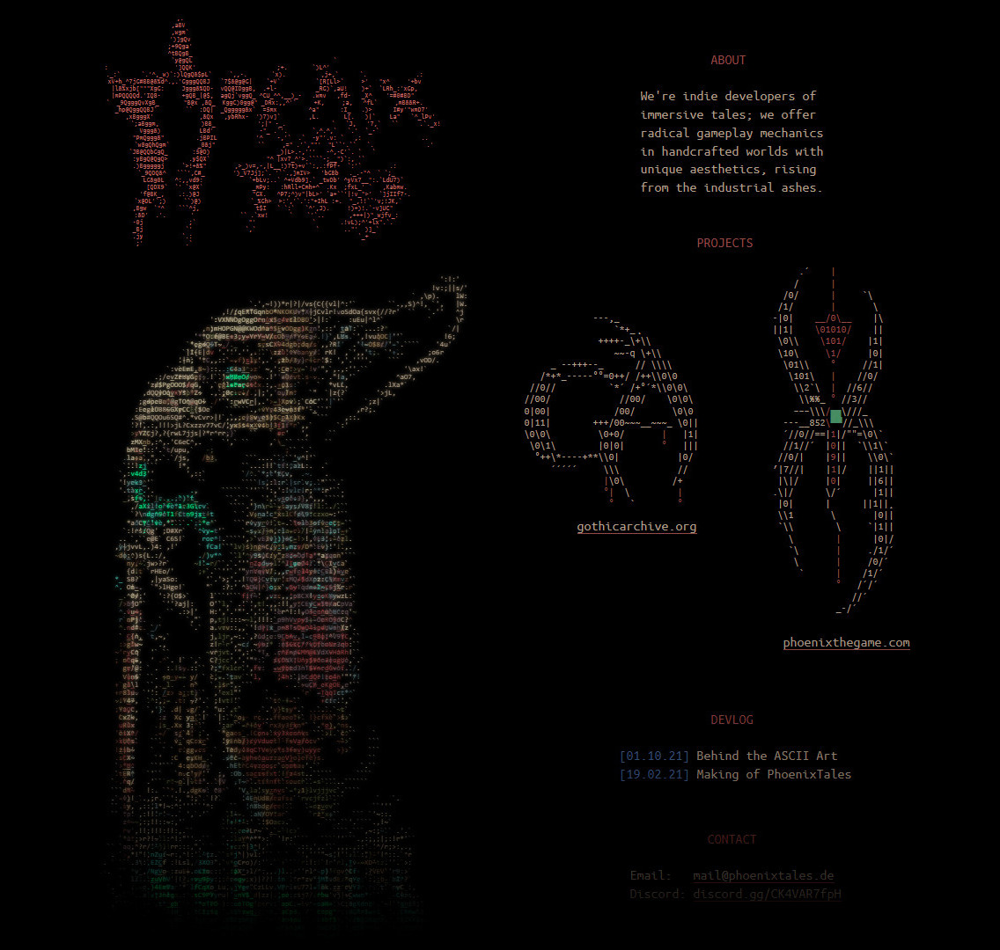
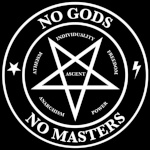
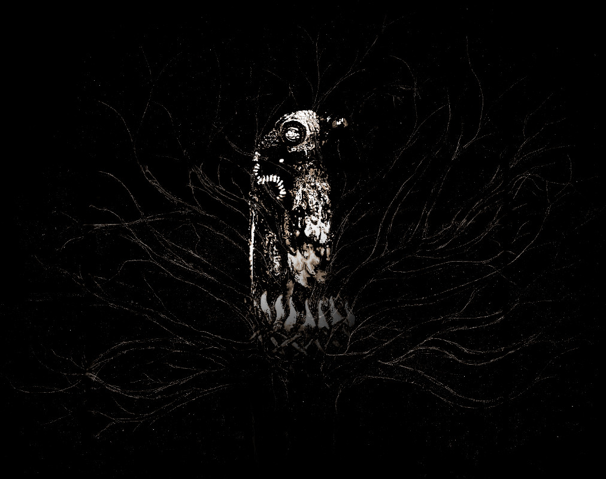

We're indie developers of
immersive tales; we offer
radical gameplay mechanics
in handcrafted worlds with
unique aesthetics, rising
from the industrial ashes.
PhoenixTales was founded in 2017 by me and logx as an independent team of developers around the creation of PHOENIX. In "Making of Phoenix Tales", I have described how I designed the bird and the logo, which represent our team.
In this one I want to give you some insight into our organisation, how it functions, what we do and who we are.
Since we work from home with everyone of us being in a different country, we organise our work via chats and meetings, currently on a private Discord Server. While we would prefer a free and open source alternative, we are using it for convenience purposes and because of how strongly our internal work is associated with the community and the public research on our official Phoenix Server. We can't deny that Discord provides a very useful and convenient platform for gaming communities and we use it for this purpose, but we have to strongly advise against using it for any kind of private communication.
Our code and ressources are managed by GitHub, including our assets. We don't just use Git to manage our current build of Phoenix, but we have all our websites hosted there too, which enables the community to participate and help us fixing stuff.
We would like to mention that at Phoenix Tales we would all describe ourselves, at least to some degree, as free software enthusiasts. We prefer to be on Linux, we hold the unix philosophy in high esteem and we love simplicity or "brutal minimalism", as Avallach likes to call it. With the design of our team website (phoenixtales.de), I have tried to convey and to embody this attitude and style:

Our core team currently consists of four people:
Arbax, Avallach, Auronen and me (flosha/Florian).
/* PHOENIX NEST */
/* Inner Circle */
+------------------+
| flosha (Florian) |
+------------------+
// Project Leader
// Creative Director
Who are you?
I am an acrobat from Germany with a focus on Hand to Hand.
How did you come to Phoenix Tales?
I founded it (together with logx) in 2017. But I began to work on it with Issues in the end of 2015 (under the working title "Project Nyx").
Why do you love Gothic so much?
I love the vision of what Gothic should have been by far more than what it turned out to be. But what I love the most is what I have characterised as its most important design choices in our design philosophy. How else to fix this broken dream without to know what it was made of? Which is, according to our analysis, essentially (1) the immersive gameplay, (2) the special setting, (3) the atmospheric density and the (4) unique aesthetics. As described in detail in our design concept here. Gothic was amazing in its conception. It was still amazing in what it delivered. But it didn't deliver what the conception promised. I see Gothic as it was more than anything else as a proof of concept of what it could have done. And that is what we do, that is what I want Phoenix to be.
What do you do in the project?
I lead the project. I'm something like the creative director and I'm responsible for all the design decisions, for the majority of the story and the world design. I do the 3D modeling, spacering, mapping, basic 2D art, some animations and the majority of the scripting (npcs, monsters, routines, dialogues). I created all our logos and designed all our websites (phoenixtales.de, gothicarchive.org and phoenixthegame.com). And I am main responsible for the design documentation and for designing all the gameplay mechanics that the programmers bring to life in code.
Which programmes do you use for your tasks?
I am using Blender for 3D Modeling, Mapping and Animations. The Spacer (Gothic's World Editor) to work on the world. Discord for brainstorming and research; LibreOffice for the actual documentation, GIMP for 2D, VSCodium for Scripting and Webdesign. I'm usually parallel on Windows and Arch Linux with dwm. If we're able to overcome some still present limitations and have written a simple guide to set it up, I would be happy to switch to Linux completely.
What are your favourite camps and guilds in Gothic/Phoenix?
In Orpheus (our Alpha reconstruction) I symphatise with the New Camp and prefer the water mages. But I still may join the Old Camp or Psi Camp most of the time, because I like the thief and psionic gameplay and progression and atmosphere the most. In Nemesis (our Sequel continuation), my favourite camp is the refugee camp. My favourite guild(s) are the beggars and mystics I think (they're related).
What are your favourite games?
Phoenix first and foremost. Obviously. I want to play it myself. STALKER: Oblivion Lost; as with Gothic, I love the vision more than the result. American McGee's Alice, for the amazing allegorical story and artdesign. Evil Twin for similar reasons; the world and character design is outstanding, but the gameplay/camera makes it unplayable. Max Payne I & II for the character, the gritty atmosphere and gameplay. Mafia (I), for the story, not its underutilised open world. Pro Skater II. Still my favourite skateboarding game; I like the gameplay, it had a great soundtrack and it influenced me to start skateboarding as a child. And Hype.
My favourite games from the last couple of years... probably Dust (for me the best shooter since.. I don't know, System Shock II?), Fran Bow, Hellblade, Total Chaos (I don't like the gameplay that much, but I love the art) and Hollow Knight (metroidvania at its finest and precise controls).
What is your favourite music?
I would say, my favourites are: Have A Nice Life, Lost in Kiev, Being as an Ocean, Ólafur Arnalds, Clint Mansell, She Wants Revenge, Tool, A Perfect Circle, Rage Against the Machine, Nine Inch Nails, Interpol, Nu-Metal stuff like Limp Bizkit and all kinds of music from the late 1990s and early 2000s.
Any books you would like to recommend?
Hard question. But what I would like to recommend to everyone are the Memoirs of Vinoba Bhave: Moved by Love. Nothing has influenced my thinking as much as Vinoba; he combined Vedanta and Anarchy, he practiced what he dreamed of more than anyone I ever heard of and his idea to unite the quest for internal liberation with the pursuit of a socio-economic revolution and to think them as mutual dependent from each other, that inspires me ever since.
What do you do other than that?
Acrobatics and designing other things. Such as acrobatic sequences and acts, other websites, clothing and stuff, like the fsocial project. But honestly, I do not find the time (or do not have the ressources) to work on all the ideas I have.

+-----------------+
| Arbax (Dortman) |
+-----------------+
// Story Assistant
Who are you?
A Romanian writer with a passion
for history and old games.
How did you come to Phoenix Tales?
I saw a thread on World of Gothic about something called 'Project Nyx' and I was immediately hooked. Not only by the ideas with which I was completely on the same page with, but also by the commitment of finding the true Gothic and to renew the spirit of the Phoenix through what Gothic should have been.
Why do you love Gothic so much?
I love Gothic for its mysterious world full of things that have no need for explanation. They need to be found and discovered by each and everyone's mind to see the true meaning behind it and to find a piece of yourself. Once these things are found and explored something changes inside of you in the real world and you feel this emptiness that you still have not found everything, which makes you come back to Gothic and to yourself.
What do you do in the project?
I help fleshing out the story of this project, some characters descriptions and some back story for some others (as well as other aspects of stuff not so much explained).
What are your favourite camps and guilds in Gothic/Phoenix?
My favourite camp from Gothic is (and I know this will sound weird) the city of the orcs. They have so much to show and so much culture displayed through their moves, words and clothing; that for me makes them so interesting. I sometimes go and just stay with the orcs in the game, studying their moves, dances and even writing on buildings and walls. They have rituals, instruments and look like they care for one another. A misunderstood culture and camp from my point of view.
What are your favourite games?
Beside Gothic some of my favourite games are Soul Reaver/Legacy of Kain; the Prince of Persia series; Outcast; Stalker; Cultist; Oni; Arx Fatalis; Command and Conquer and Giants Citizen Kabuto.
What is your favourite music?
I listen to a lot of instrumental music from the region I was born in. Meditative/ritualistic music. Linkin Park. And quite a lot of soundtracks. And as an artist Adrian von Ziegler.
Any books you would like to recommend?
I am in no position to recommend any books but I'll leave some titles that I enjoy:
- The Three Magical Books of Solomon - Aleister Crowley
- Beelzebub's Tales to His Grandson - George Gurdjieff
- The Count of Monte Cristo - Alexandre Dumas
- Kitab al-Azif - Abdul Alhazred
- Serpent in the Sky: The High Wisdom of Ancient Egypt - John Anthony West
What do you do other than that?
Other than writing things I like to paint, I like sculpting things from wood, I like to read and do sports.
+-----------------+
| Avallach (Adam) |
+-----------------+
// Code Guru
Who are you?
I'm a software developer living in Amsterdam, Netherlands.
How did you come to Phoenix Tales?
Through the Gothic Archive and Project Phoenix.
Why do you love Gothic so much?
It's my first dark fantasy cRPG I played in teenage years. I value it for its world design, easy immersion and extensibility.
What do you do in the project?
I like the most to help with art and story design, but my primary role is actually in engineering. For example, I set up the infrastructure which currently powers the Gothic Archive.
Which programmes do you use for your tasks?
VS Code, Visual Studio, Git, GIMP, Bash, C++, Hex-Rays IDA.
What are your favourite camps and guilds in Gothic/Phoenix?
The Brotherhood from the Swamp Camp is my favorite.
What are your favourite games?
Gothic, Dragon Age: Origins, The Witcher.
What is your favourite music?
Nightwish, Jim Steinman, The Pretty Reckless, Kalafina, KaiRo...
Any books you would like to recommend?
Andrzej Sapkowski's books beyond The Witcher.
What do you do other than that?
I want to make a standalone game not based on Piranha Bytes engines.
+---------------+
| Auronen (Jan) |
+---------------+
// Lead Programmer
Who are you?
I am from the Czech Republic, currently (still) a student. I like cycling, walking, swimming and of course programming. I also like woodworking and metalworking. There is something special about creating things be it physical or abstract.
How did you come to Phoenix Tales?
I presented my Gothic 1 style trading system in the Phoenix server and flosha asked, if I could do a similar level of editing for G1. I have implemented a first draft of the Phoenix inventory system and then it just happened. :)
Why do you love Gothic so much?
Very difficult question. The game has a unique atmosphere, deep mechanics and still has a great community (even in the Czech Republic), even after 20+ years. I like the mystery of the first game, with different locations, characters, small inconsistencies that make you want dig in and explore everything in and outside the game. And the mystery extends outside the game with the study of the engine, the alpha versions and demos. In fact, it was so amazing, that I decided to be a programmer just to join the Piranhas in order to work on Gothic. Today... I would not want to work as a game dev at all. At that point in time I just wanted to work on games as amazing as G1, but games as these are not made nowadays. Only Phoenix wants to follow this (in game dev years) "ancient" tradition and that is amazing.
What do you do in the project?
I take care of implementing the core functionality on the engine level using Union.
Which programmes do you use for your tasks?
I think it is very important to use software, that respects your freedoms. Even if it isn't always possible. I also have to or want to use software that is not free, but for Phoenix I try to use as much FOSS as possible. For the development for Phoenix I use:
- VSCodium - VSCode fork, that removes Microsofts telemetry
- Emacs - the text editor by the founder of FSF himself, Richard Stallman
- DaedalusLanguageServer - Kirides' language server for Daedalus scripting language
- Blender with Kerrax's importer - for 3D work
- OBS - screen capture and streaming
- Kdenlive - editing video
- GIMP - image editing (textures and sketches)
- Wine - compatibility layer - makes Gothic run on GNU/Linux
- Font Forge - font editing
What are your favourite camps and guilds in Gothic/Phoenix?
In Vanilla Gothic I like the Old Camp the most and right after it the Sect Camp. As for the Sequel it is really hard for me to tell. I love everything in the Sequel, but in the build that is available, the Old Camp's atmosphere is probably the best.
What are your favourite games?
- Gothic 1 - the best PB game without a question and for me the best game ever.
- Age of Mythology - very nice RTS, similar to AoE.
- Knights and Merchants - RTS with unique style, has a free and open source remake.
- Minecraft - simple and great fun, you can do what you want.
- Dota 2 - Valve's and IceFrogs continuation of DoTa allstars - works great on GNU/Linux but is very time consuming, I am just a passive viewer at the moment.
- Total War: Warhammer and Vermintide - amazing setting, atmosphere and playability.
What is your favourite music?
The Beatles, Pink Floyd, Rammstein, Dire straits, Scorpions, Black Sabbath, ELO, Nazareth… those are just some of the bands I have permanently on, plus a lot of classical music.
What do you do other than that?
Apart from working on Phoenix I work on other Gothic related things. I translate mods into the Czech language, I create features (Union and Ikarus + LeGo) and also work on other mods.
/* PHOENIX TREE */
/* Outer Circle */
+---------------------+
| LongJohnson (David) |
+---------------------+
Who are you?
I'm a future computer science student who's interested in creating video games and modifications.
How did you come to Phoenix Tales?
I already helped out a little bit after the project started in 2017 but due to personal problems I couldn't work on it anymore. That changed 3 years later when flosha created the Phoenix the Game Discord. I joined it, we got into contact again and ever since I occasionaly help out with where I can.
Why do you love Gothic so much?
Gothic provides you with interactivity that you cannot even find in many modern open world video games. NPCs around you react to what you do, all of the NPCs have their own daily routines that change. Nobody is at the same place the whole day. Gothic's small but extremely packed world is a prime example in how you should design open worlds. It has an extremely interesting and unique atmosphere and a very good soundtrack. You can swim and dive, you can climb, fight and use objects around you, even some which have no use to your character. You really notice that it was a project made with lots of passion just by looking at how much was actually planned and cut from the game and what is still in it. There are not many games that try to be as revolutionary and experimental as Gothic 1 and I especially love it for that. It inspired me to become a video game modder and mainly inflamed my interest to now study computer science.
What do you do in the project?
I research and attempt to recreate and improve the animations of the alpha versions of Gothic for the release human model. But I also try to help out with all kinds of other things, for example so far by understanding the waynet system of Gothic and its alphas to provide an easy way to compare the waynets of these different versions with each other or by improving the plugin for the modular armor system. I like to script, to program, to animate and to research things related to Gothic therefore I hope there are many things regarding Phoenix still to come where I can be helpful and where I am hopefully motivated enough to work on to make them as good as possible.
Which programmes do you use for your tasks?
I mainly use 3DS Max 2014 and sometimes Blender for modelling, mapping and animating, Photoshop to create and to modify textures and Notepad++ and Visual Studio Code to create and to edit scripts. To search, research and understand some engine functions I use the disassembler tool IDA.
What are your favourite camps and guilds in Gothic/Phoenix?
In Gothic/Orpheus: I've always liked the New Camp. Their idea is to provide their camp members with freedom and to promise them an escape out of the barrier. In the hopeless seeming valley of mines surrounded by a now over 10-20 year old barrier I like their hopeful way of thinking and their attitudes. They don't give up and try to have the best life possible not having to work for anyone - though there are still some assholes who abuse their position. They as a whole seem to be the most sane group out of all the camps to me even if their idea to escape the barrier is absolutely crazy.
In the Sequel/Nemesis: For my first playthrough I think I will join the masters in the refugee camp as a thief first. My first playthrough as far as I can remember in vanilla Gothic was in the old camp because Diego was the first nice person you met and throughout the game a person you could trust. Why should this be different here?
What are your favourite games?
Gothic, The Legend of Zelda: Oracle of Ages/Seasons, The Legend of Zelda: Ocarina of Time, Alundra, Hype: The Time Quest, Team Fortress 2, Pokémon Crystal, Battle for Middle-Earth 1 and 2, Jak and Daxter and The Sims: Bustin' Out for GBA.
What is your favourite music?
I love IDM. Experimental electronic music in general is the highpoint of humanity to me. My favourite artists from the IDM genre are Richard D. James, Luke Vibert, Squarepusher, Ceephax Acid Crew and PilotRedSky. My favourite IDM track is, at the time of me writing this, Synthacon 9 by The Tuss.
Other incredible IDM tracks are: AFX - pretend analog extmix 2b,e2,ru; Aphex Twin - Lisbon Acid; AFX - VBS.Redlof.B; AFX - Cilonen; AFX - PWSteal.Ldpinch.D; MNLTH - Headlight; Pilotredsky - Clock like Woz; Pilotredsky - Saturn Scratch This Note; Pilotredsky - Leveret; Pilotredsky - Nootropics; pilotredsun - along with brew; Squarepusher - Do You Know Squarepusher; Squarepusher - Beep Street; this cool nameless track by Squarepusher and this one I just discovered a few days ago: Cignol - Modularity.
What do you do other than that?
Regarding Gothic: I currently am working on a 2-player-splitscreen-coop-plugin for the Gothic 2 engine using Union which is already in a good playable state. Though I still have to test that out and improve it a lot before I can finally release it. In the last few years, I started composing electronic music, inspired by the musical artists I named above. I attempt to make every track as different as possible from the track I composed before but there's still a long hard road to go to improve and for me to be satisfied with it. :)
/* HONORARY MEMBERS */

+---------------------+
| Phantom95 (Dmitriy) |
+---------------------+
// Alpha Researcher
Who are you?
A former athlete from Russia, now passionate about the history of the development of his favourites works. Most of all I enjoy films, stories and of course games of low/dark fantasy, fiction and horror genres. Speaking of games in particular, the ones I prefer the most are those that fit the definition of «immersive-sim». Such games are not only fun to play, but also to explore in various early versions, as they are usually just overflowing with all sorts of cool ideas at various stages of development.
What is your association with Phoenix Tales?
We share a common desire to learn more about what "GOTHIC" was really meant to be. All this, all the knowledge and the materials that we receive must be well kept and stored securely. (See the Gothic Archive).
In order to recreate Phoenix as accurately as possible, it's crucial to know and understand how the game concept evolved during development, and why certain ideas were either discarded completely or transformed into something completely different. I try to help the team with this to the best of my ability, parallel trying to make new finds regarding the early versions/design documents. Sometimes I even suggest my own story/gameplay ideas, which usually arise rather spontaneously.
Why do you love Gothic so much?
I know very well why I love Gothic so much. All because it has a lively, dynamically changing world populated by NPCs with excellent AI (for 2001). This world unfolds in a very successful and believable medieval setting, close to the low fantasy/dark fantasy genre. It really feels like reality! There are so many things in it that work to simulate a believable environment... From the design of the levels and objects in it to the design of the inhabitants (humans, orcs and monsters) of the main dimension Morgrad. Here you won't find the anthropomorphic, civilised races like elves and dwarves that are the hallmark of the High/Generic Fantasy genre. In Gothic we have only one civilisation opposed to humans - the orcs. And their appearance reminds of ancient humans as they lived on Earth about ~2 million years ago. What about goblins and trolls you ask? Actually they are just common monsters, not pretending to be something more - the goblin looks like a small tailless lizard, the troll looks like a gorilla. Not something you see in other fantasy games either. In Gothic you hardly encounter any animals with extremely unusual appearances. Everyone you encounter, at least from the Adanos dimension, looks believable. If you're familiar with the history of our planet you will know that there were real creatures at certain stages of the evolution of life, which actually served as inspiration for the development of the Gothic fauna. In the TES series this is not the case at all. There we see a world that is interesting in its own way, but not as believable and close to reality as the world of Gothic. All those multiple anthropomorphic races look unconvincing to me and are the reason why I prefer Gothic to Morrowind. So it's for this successful foundation laid in Gothic I and safely developed in the Sequel (the true Sequel!) why I love Gothic.
And as for such features of the game as interactivity, (primarily the mechanics of exploring the world - climbing ledges, diving) harmonious combination of music for each specific location, storytelling, it only further enhances immersion in this already very well designed world. If the world itself sucks, if it's not initially interesting and appealing to you, then no amount of even the coolest interactivity will save it. So, when it comes to prioritization, I definitely put the setting, not the interactivity, in the first place.
What does this project (PHOENIX) mean to you?
The Phoenix project at the moment seems to me the only way to harmoniously combine everything that was cut-out and conceived in the process of the Gothic development. This is a lot of work that requires huge investments, and I am glad that the most passionate Gothic Alpha fans have gathered here (as well as those people who are really well versed in gamedev). This will help not only to complete the project faster, but also to fill it with better, more quality content. It is also important for me to be a part of this project because I hope that the contribution that I make can help leading to a more accurate, faithful implementation of the original Gothic vision. Not to mention the fact that it's just interesting and pleasant to be here, especially for me, considering that I was one of the first people who was seriously interested in the Gothic Alpha versions back in 2014. The Phoenix Tales Discord server is a great and friendly place for all those who love the Gothic Alpha and are waiting for its proper revival in the form of the Orpheus project.
What are your favourite camps and guilds in Gothic/Phoenix?
The ideology of the new camp is closest to my soul. I can imagine that if I were in the colony myself, I would definitely go there and try to become a KdW apprentice. (Not Org, because I'd rather do good deeds and research than harm someone by stealing or killing). The bad thing is that this camp was not as detailed as it was described in the "Phoenix Hauptmissionen Alle Doc". It definitely needs new unique quests and dialogues that should have been given at least to unused characters like Bruce, Blade, Torlof and Orik.
What are your favourite games?
- Gothic (1 and the Sequel)
- Thief (1,2 and the Deadly Shadows)
- Arx Fatalis
- Dark Messiah
- STALKER
- Deus Ex
- Half-Life (1, 2 and episodes)
- Return To Castle Wolfenstein
- Clive Barker's Undying
What is your favourite music?
At the moment I prefer to listen to game soundtracks rather than tracks by music groups. In the past I used to be a big fan of electronic music and metal, listening to the nu, industrial and alternative metal subgenres. I can remember Celldweller, Rammstein, Oomph, Megaherz, Sevendust, Linkin Park and Ruoska.
Any books you would like to recommend?
Frankly, I don't think I can recommend any books, given that I've read quite a few in my life (I devoted my early years to sports and the gym). After high school and university, the only books I read were stories from the STALKER and the Metro universes. Just that and nothing else... I can only say that if you really consider yourself a Gothic fan, then you should at least try reading the semi-official story by Alexander Wittmann called "Sleeper's Ban", which you can also download from the Gothic Archive thanks to the team.
What do you do other than that?
I do research on early versions of my favourite games and various cancelled prototypes. In addition to this, I sometimes like watching cut scenes/episodes from some interesting films... Honestly, I spend quite a bit of time on YouTube watching videos on this thematic. As for my hobbies outside of PC, I've done powerlifting and armwrestling in the past. I might go back to that again, just to keep my body in shape rather than chasing weights. If you ask me about collective sports - it is not really my thing, the only one thing I'm attracted to is football. I love to watch the Champions League and Europa League matches, especially in the early qualifying rounds where we can witness sensations sometimes. Always interesting.
In 2015, I saw a thread by flosha in the WoG online forum about his ideas for 'Project Nyx'. I was immediately captured by his attention to details and his passion for the old, ambitious and slightly punk-like vision of the original Gothic and the abandoned (and now rediscovered) Sequel. After lurking around the WoG forum for some time and leaving an occasional post on the Nyx thread, I finally decided to reach out in 2017 and asked whether I could help to make this dream come true.
Even after 20 years, the original Gothic still stands out for me as a landmark in video game history. The unique setting of the ore mining colony, the unique and memorable monsters, locations and NPCs as well as the incredibly immersive gameplay were well ahead of its time and left a deep impression on me. All the time spent with Gothic was also formative for my career later in life as it encouraged me to learn programming and made me think about creating truly believable virtual characters and 'artificial intelligences'.
When I joined, I started out by helping with some scripting. But pretty soon I found myself enmeshed in many organisational aspects behind the scenes (setting up development workflows, organising design documents and code repositories) and also discovered a real passion for fleshing out the lore of the Gothic/Phoenix universe and writing stories for some of the intriguing characters we want to show in our plot.
VSCode was my Swiss army knife when working on code for Phoenix. Google Docs were our go to place for all collaborative work on the design documents and GitHub helps to manage our code repositories.
Orpheus: Ever since I saw their concept arts during the Gothic installation, the bandits, mercenaries and water mages of the New Camp were my favourite factions. Nemesis: The demon hunters look pretty badass, but the original concept of the paladins (not the knights in shiny armour from Gothic II) is not bad either.
Besides Gothic and Gothic II, the games which truly stand out for me are: Stronghold, WarCraft III, Medieval II: Total War, Morrowind, Assassins Creed 1 and 2, Witcher 1-3, Thronebreaker and Kingdom Come: Deliverance.
Quite broad and always shifting. But a few I always find myself going back to are: Linkin Park, Red Hot Chili Peppers, Greenday, Christopher Tin, Olafur Arnalds, Yann Tiersen and Hans Zimmer.
'Machine Dawn: A Brief History of Cybernetics' by Thomas Rid was an interesting recent read on the origins of 'Cyber' and the historic events and techno-philosophical discussions shaping technologies like AI and the metaverse.
Outside the virtual world, I love outdoor activities (hiking, swimming, archery) and spending time with the piano.
To differentiate between the inner circle and the outer circle of development, I've came up with an allegory:
We coined the term 'Phoenix Nest' for the core team of four, the "invocators" of the Phoenix, to let it rise from the fire (our passion and effort) within the nest and from the ashes of the industry (the gaming industry that sacrifices art and design for profit). In this allegory, the original developers of Gothic are the builders of the 'nest' we took refuge in, nurturing the Phoenix until he is ready to fly. Surrounding the nest, like on the branches of the tree the nest is build on, are the 'Contributors', who form the outer circle of development, helping to nurture the fire. And then there is the Community and Supporters, which in the analogy would be the people surrounding the tree.

As you see, the development of PHOENIX is not only driven by this small inner circle, but also by independent contributors who help us in various forms without being directly involved in the comprehensive design process in the nest, as 2D artists, animators, external programmers, scripters, concept artists, musicians and so on. In this regard, we want to specifically mention Riisis, Bloody (Piotrek), ThielHater (Pierre), Vaana, Phantom95 (Dima), Herobrine (David), Jr (Sasha) and admafi (Jonas).
Thank you and to everyone who contributes to the archive, creates artworks inspired by our vision, translates our texts, moderates our channels, motivates our work and researches the material our dream is made of; and thank you to everyone who works for peace in these fucked up times of war.